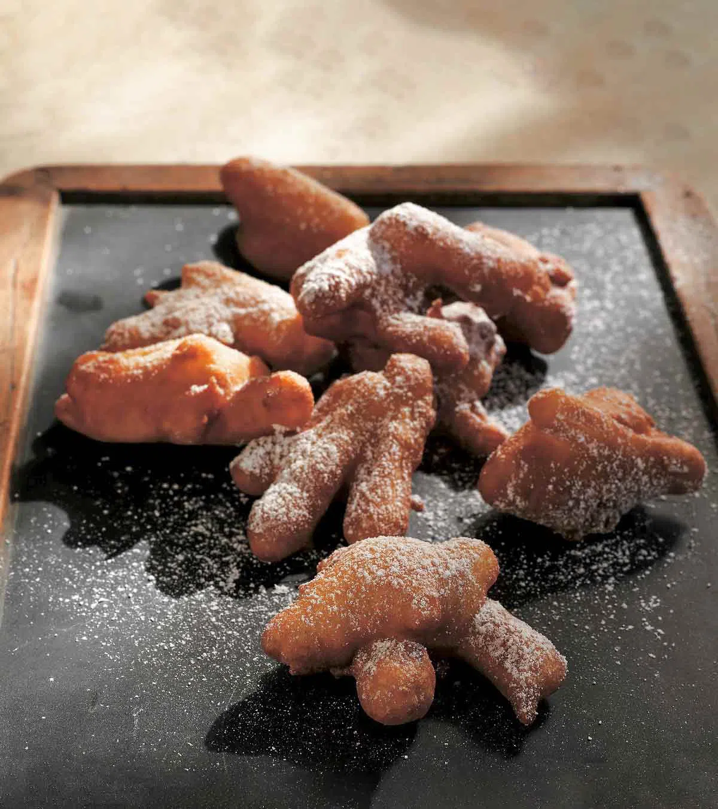

Thomas Keller's Apple Fritters

Warm, fluffy apple fritters!
This is my favorite fall dessert when apples are fresh and it's chilly outside.
Feel free to serve with vanilla ice cream or with a honey drizzle.
Ingredients
- 1 cup all-purpose flour
- 2 tbsp granulated sugar
- 1 1/2 tspn baking powder
- 1/2 tspn ground cinnamon
- 1/2 tspn kosher salt
- 1 large egg
- 1/2 cup plus 1 tbsp whole milk
- 3 large Fuji, Gala, or Golden Delicious apples
- Canola oil
- Powdered sugar
Steps
- Whisk together flour, sugar, baking powder, cinnamon, and salt in medium bowl.
- Lightly beat eggs and milk. Whisk into dry ingredients.
- Peel apples and slice the apples from core. Cut the apples into matchsticks.
- Fold apples into batter.
- Heat about 1 1/2 inches of oil to 325°F in a deep pot.
- Set a cooling rack over a baking sheet and line with paper towel.
- Using two forks lift up about 5 apple matchsticks and add to hot oil.
- Fry for 5 minutes and transfer to paper towels.
- Repeat in batches.
- Sprinkle generously with powdered sugar and serve.